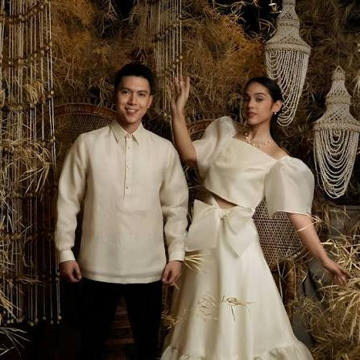
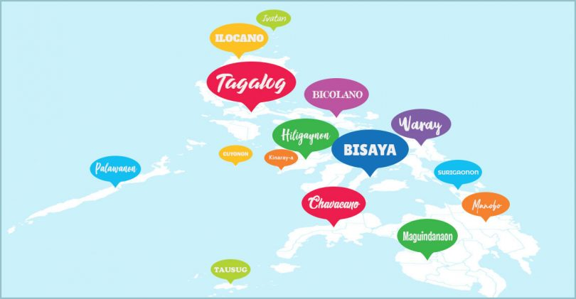
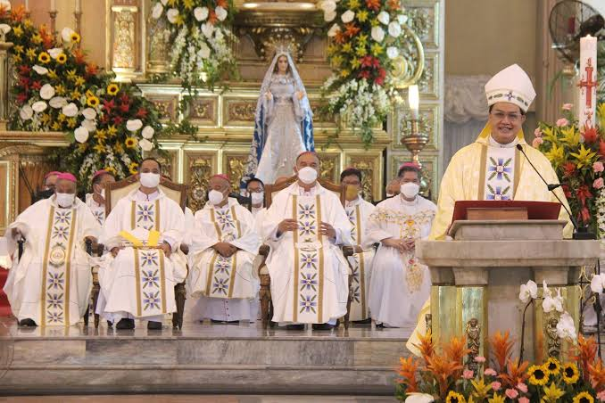
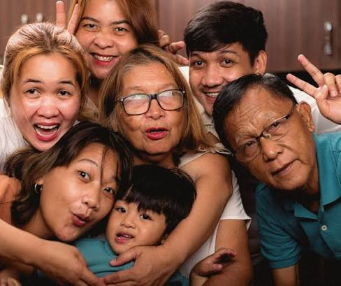
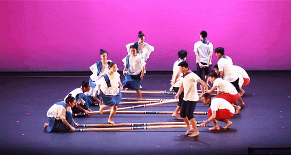

The Culture of The Philippines
The Philippines has a rich and diverse culture shaped by its history, traditions, and the influences of different peoples. From food and festivals to family traditions and everyday customs, Filipino culture reflects the warmth, creativity, and values of its people.

Traditional Clothing
Traditional Filipino clothing includes the Barong Tagalog for men and the Baro’t Saya and Terno for women. These outfits are often made with lightweight, colorful fabrics and detailed embroidery. They are commonly worn during weddings, festivals, celebrations, and other formal events. Traditional clothing reflects the Philippines’ history and diverse cultural influences.

Language
The Philippines has many different languages, with Filipino and English being the official languages. Filipino is mainly based on Tagalog and is widely spoken throughout the country. Many people also speak regional languages such as Cebuano, Ilocano, and Hiligaynon. Language is an important part of Filipino identity and culture.

Religion
Christianity, especially Roman Catholicism, is the most common religion in the Philippines. Religion plays an important role in Filipino traditions, holidays, and everyday life. Many Filipinos attend church regularly and celebrate religious festivals. Islam is also practiced, especially in parts of Mindanao.

Family & Community
Family is one of the most important parts of Filipino culture. Filipinos often have close relationships with parents, grandparents, cousins, and other relatives. Respect for elders is highly valued, and younger people may use terms like “po” and “opo” to show respect. Families often support and care for each other, even when they live far apart.

Music & Dance
Tinikling is a traditional Philippine folk dance that imitates the quick, graceful movements of the local tikling bird as it walks through grass and dodges traps. During the performance, two people rhythmically beat, tap, and slide long bamboo poles on the ground and against each other. Meanwhile, dancers nimbly hop, jump, and weave their feet in and out of the moving poles without getting caught.